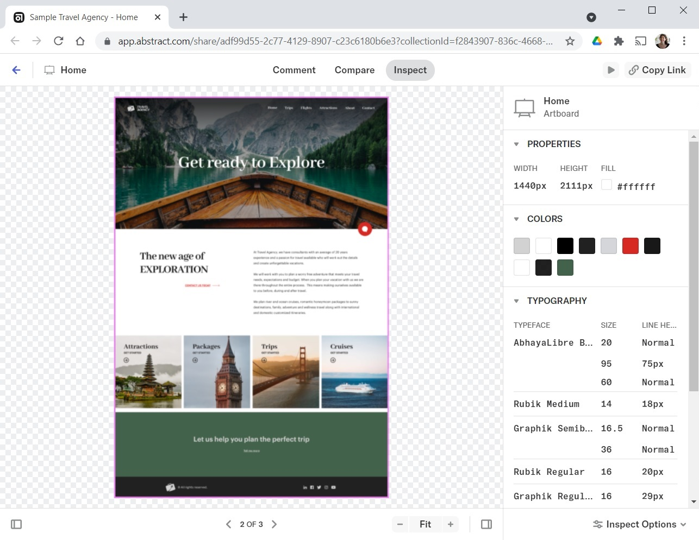
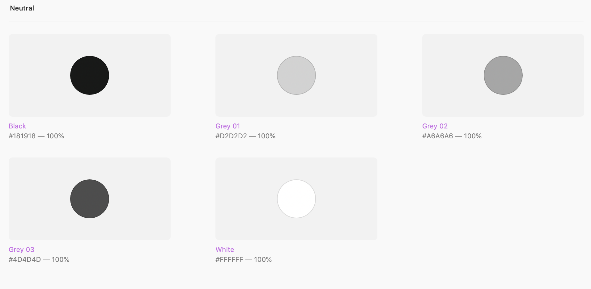
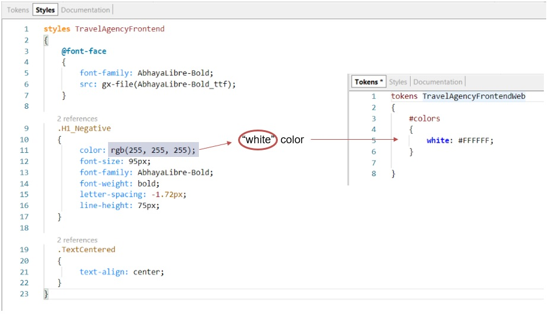
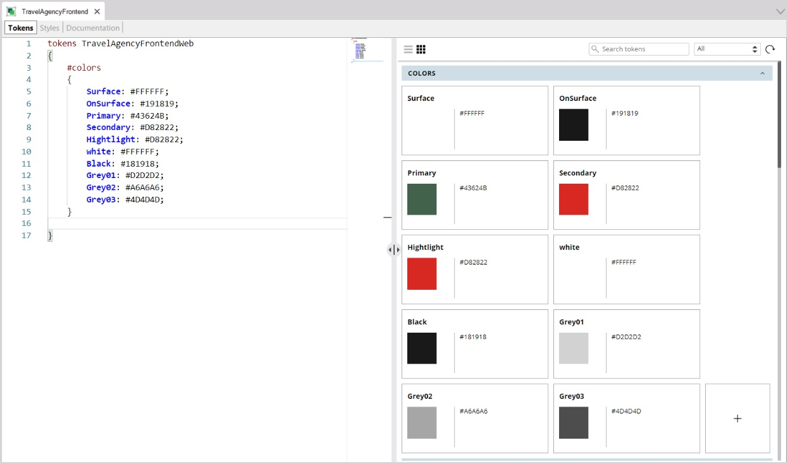
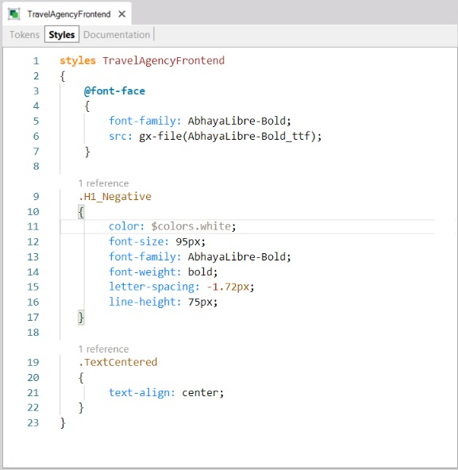
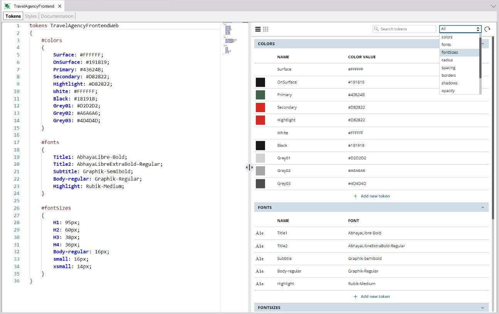
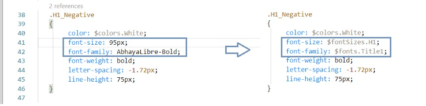
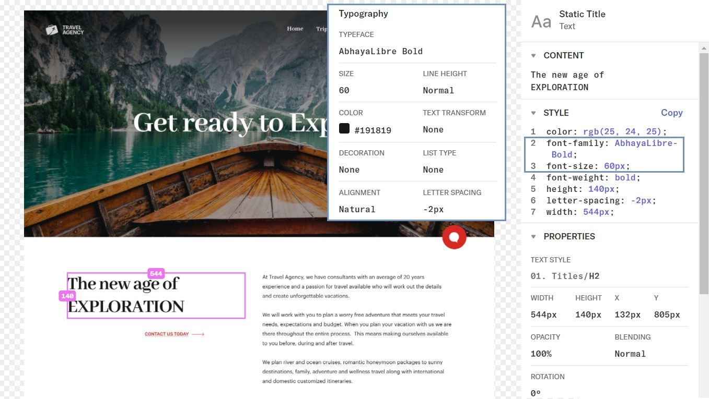

Design System Object - Tokens, design constants (semantized)
There is an abstraction that designers generally define: that of the colors to be used on the page:

In general, these colors also have an associated semantics, which designers define as color variables (that's what they call them). For the Travel Agency screens, they have defined:
● Surface: represents the surface or background of the product/element. In this case, it is a type of white (#FFFFFF)
● OnSurface: represents the elements placed on the surface or background. In this case, it is a type of black (#191819)
● Primary and Secondary: represent the main colors of the product. In this case, they will be a type of green and a type of red, respectively ( ).
● Highlight: represents elements to be highlighted. They are not necessarily linked to functionality, and will be used for links, for some buttons, and so on. Here, it will be the same type of red as the Secondary color, but it could be another one.
They have also defined neutral colors (whites, blacks and grays), which are used in several places and for different purposes, so they are not as abstracted as the others.

For example, the color of the title on the Hero image will correspond to the white specified as White.
Then, in the H1_Negative class, instead of specifying the color property’s value (#FFFFFFFF, which is the same as rgb(255,255,255)) you could place that kind of “color variable,” White. In GeneXus, it will be called token and will have to be defined in the Tokens tab of the Design System Object

A constant with a semantically relevant name is called a token.
There, you will define all the color tokens that you know abstract specific colors (there is a graphic editor on the right that is fully synchronized with the text editor on the left):

To be able to use the token instead of its value, assign this to the color property of the class:
color: $colors.white;
It will look as follows:

Likewise, for all the controls where the primary color is used, which in this case is green, the $colors.Primary token is referenced, instead of using its value directly. In this way, to change the primary color from green to yellow, for example, it will be enough to change the token’s value.
Of course, the idea of design constants doesn't apply only to colors.
For example, you could also define constants for the font families to be used, as well as for the sizes of those fonts.
If you examine the design file, you will see several font families that will be used for texts when they are used as large title, small title, subtitle, normal text, highlighted text:

Therefore, it is convenient to define tokens for these uses of the font families; that is, to give them a semantic name. The same goes for text sizes. For example:

In this way, you can use these semantic abstractions (tokens) in the style section and abstract from their particular value:

Thus, all texts that have the H1_Negative class will have:
● color: that of "White",
● font family: that of "Title1",
● font size: that of "H1".
If later on you want to change the font size applied to the most prominent titles – H1 – from 95px to 100px, you just need to change the value of this token.
In short, tokens are names given to values such as color, font, font family, radius, spacing, borders, shadows, opacity, z-indexes, media queries, times and timing functions, which have a special meaning for the Design System of the application being designed, so that you can abstract them and use those (stable) names, instead of the (unstable, variable) values.
Looking at the design file again, note that you will need to create a class for the title of the page content – on the page background surface – (the one you had, H1_Negative, was for titles on a graphic background):

Give the name H2 to the class that represents the concept: title of the page content – on the page background surface.
The text color will correspond to the color of those elements placed on the background surface; that is, OnSurface.
And font-family will correspond to that of the main titles, Title1, but its font size will correspond to the H2 title size.

Availability
Since GeneXus 17 Upgrade 6.
| Backlinks |
| Toc:Design Systems |